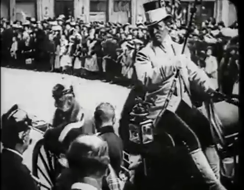
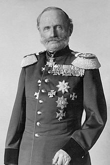

German films
|  |
|---|

King Georg of Saxony
Clemens and Gudio Seeber continued to make topicalities in their hometown of Chemnitz in Saxony. In 1902 the city was honoured
with a visit from King Georg of Saxony. Georg (1832-1904) succeded his elder brother Albert in June 1902. A diagreeable man and
unpopular king, he was, to general relief, carried off by an attack of influenza in 1904. THe Seebers would film the King once
more before his death, in Freiburg This is the only film that the Seebers are known to have made in 1902.